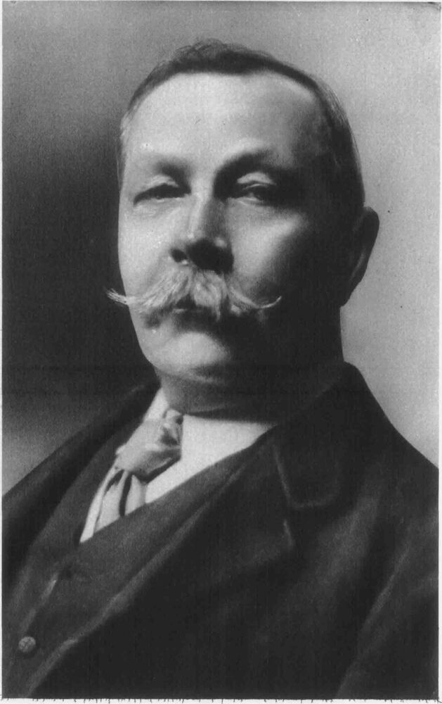

Creator of Sherlock Holmes

Sir Arthur Conan Doyle
Sir Arthur Ignatius Conan Doyle (22 May 1859 – 7 July 1930) was a British writer and physician. He created the character Sherlock Holmes in 1887 for A Study in Scarlet, the first of four novels and fifty-six short stories about Holmes and Dr. Watson. The Sherlock Holmes stories are milestones in the field of crime fiction.
Doyle was a prolific writer; other than Holmes stories, his works include fantasy and science fiction stories about Professor Challenger and humorous stories about the Napoleonic soldier Brigadier Gerard, as well as plays, romances, poetry, non-fiction, and historical novels. One of Doyle's early short stories, "J. Habakuk Jephson's Statement" (1884), helped to popularise the mystery of the Mary Celeste.